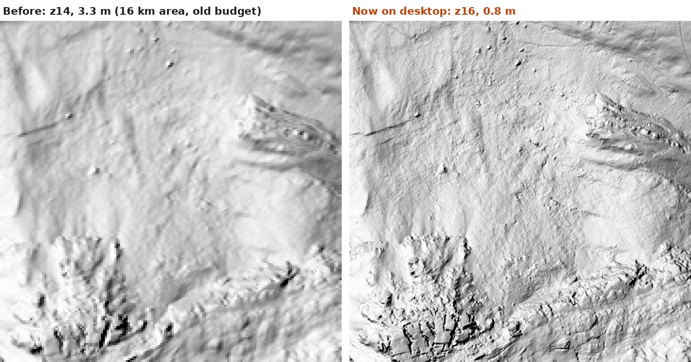
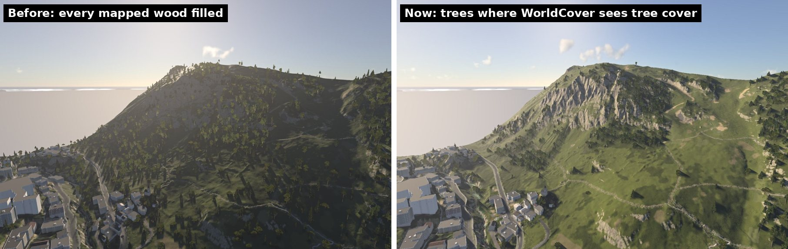
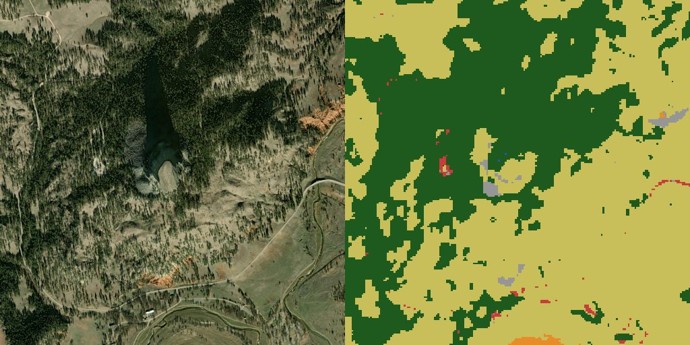
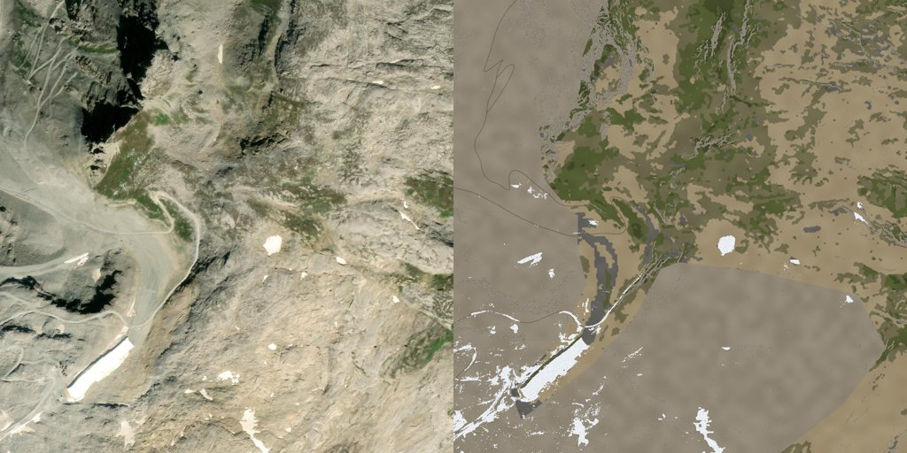
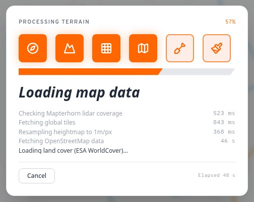
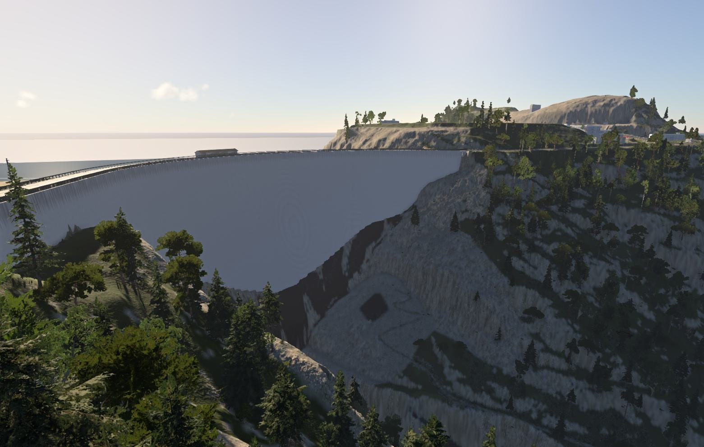
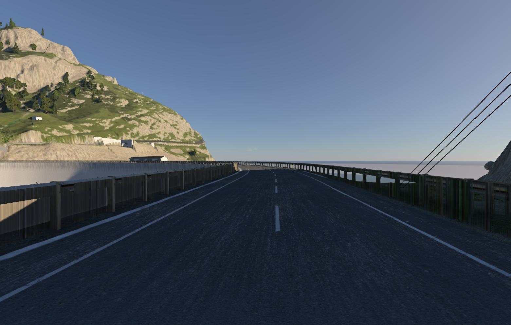
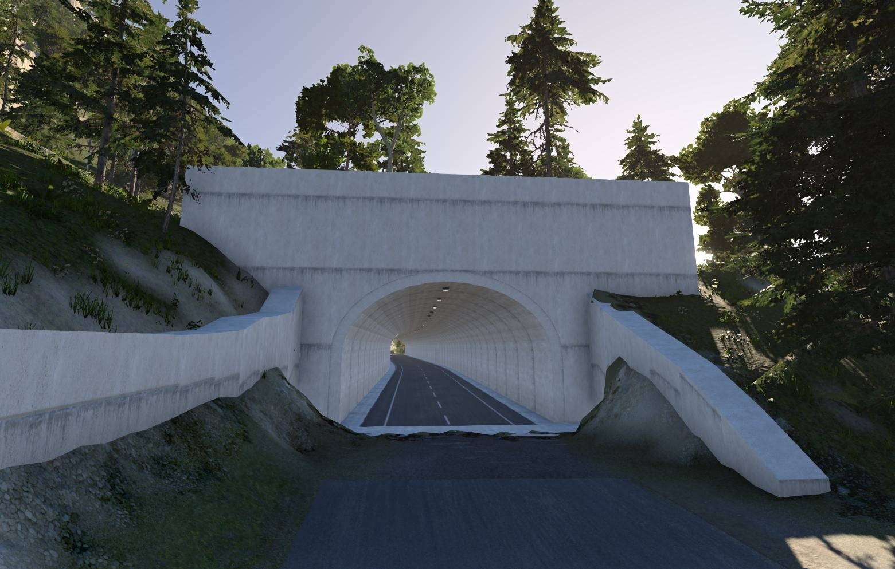

MapNG
MapNGMost of this update started with one very detailed report from Fizz_Mechanic on Discord, about a 16 km level of Tignes in the French Alps: forests far above the tree line, walls along the lake, a trench cut into the road by the dam, a road deck hanging off a cliff. Every point was fixed, and several turned into features every level now gets.
🖥️ Your downloads kept, and full-detail lidar
Change a setting without downloading it all again
When you click Generate Data or Preview 3D in the desktop app, everything it downloads (elevation, satellite imagery, OpenStreetMap data, land cover) is now saved to disk. Change the processing size, the terrain choice or anything else, generate again, and only what's new is fetched.
| 4 km of Val d'Isère at 1 m | Time | Downloads |
|---|---|---|
| First Generate Data | 48 s | 1,720 |
| Again, after changing a setting | 28 s | 1 |
The cache is cleared when the app starts, and OpenStreetMap data is fetched fresh after 30 minutes, so edits on OSM still show up. Each level's own saved data (for Update and Modify in My Levels) is kept apart, as before.
Free lidar at full detail, for big areas

Lidar comes as tiles, and the finer the tiles, the more of them a big area needs. The browser can only hold so many, so a big area steps down to coarser tiles. The desktop app has much more room: it now reads up to about 2.5 GB of tiles against the browser's 290 MB, so Fizz's 16 km area at 1 m gets about 0.8 m lidar instead of 3.3 m. The hint under the elevation source tells you the detail your area will actually get, and on the website it says when the desktop app would read it finer.
🌲 Real land cover, from ESA WorldCover
OpenStreetMap is great at roads and buildings, but its woods are often drawn generously, and in the mountains they can reach far past where any tree grows. At Tignes that meant about 134,000 trees above 2,300 m. MapNG now also reads ESA WorldCover: a free, global map of what covers the ground, at 10 m, made from Sentinel satellite imagery. It's read once while generating, alongside the map data.

- Trees where trees grow. Trees filling a mapped wood, and trees spotted as canopy in the imagery, are planted only where WorldCover sees tree cover. Trees OpenStreetMap maps one by one always stand, exactly where they're mapped.
- Mountain trees. Untagged trees high in the mountains are now conifers, and slopes steeper than about 45° are painted as rock rather than streaks of grass.
- Ground on unmapped land. Wherever OSM maps no land use, which is most land outside towns, the terrain materials come from the land cover: grass, fields, forest floor, bare ground, rock on steep slopes. The grass billboards grow only on grass.
- Snow is painted on the game texture where WorldCover has snow and ice and the satellite image is actually white.
- The regional look follows what covers the land: a desert or dry upland where bare ground and scrub dominate, rock for high mountains, dry grass for open prairie and steppe. The 3D preview's trees now match the level too.



It shows up as its own step in the progress card, inside Loading map data, and takes about a second. If WorldCover can't be reached, MapNG gives it 20 seconds and then goes on without it, as before.
🏞️ Dams

Lidar ground models remove man-made structures, and a dam is one: the Barrage du Chevril came out as the gorge underneath it. Dams mapped in OpenStreetMap are now built as concrete structures. A dam with a road on it is shaped as an arch round that road, with its downstream face flaring out the deeper it goes. The road is painted across the crest with guardrails on both sides, and the terrain is left exactly as the data has it.

🚇 Tunnels without digging

With the Terrain choice set to Untouched, MapNG doesn't change a single height, so tunnels used to stay as roads over the hill. On lidar, GPXZ or your own upload they're now built: the tube runs out to where the surveyed hillside meets the road, the ground opens only where it cuts into the tube, and a bigger headwall with a concrete apron hides the cut.
On the global 30 m data those tunnels still go over the hill (their entrances would need digging), and the Terrain choice says so.
🧹 Smaller changes and fixes
🙏 Thanks
Huge thanks to Fizz_Mechanic for the Tignes report behind most of this update. Land cover: © ESA WorldCover project / Contains modified Copernicus Sentinel data (2021) processed by ESA WorldCover consortium (ESA WorldCover, CC BY 4.0), read from the AWS Open Data bucket. Lidar from Mapterhorn and the national surveys it gathers.
Heads-up: the Windows build still isn't code-signed. If SmartScreen warns you, choose More info, then Run anyway.
Try a mountain, a desert or a dam you know and tell me what you see. Post in the MapNG Discord or open a GitHub issue. 🧡